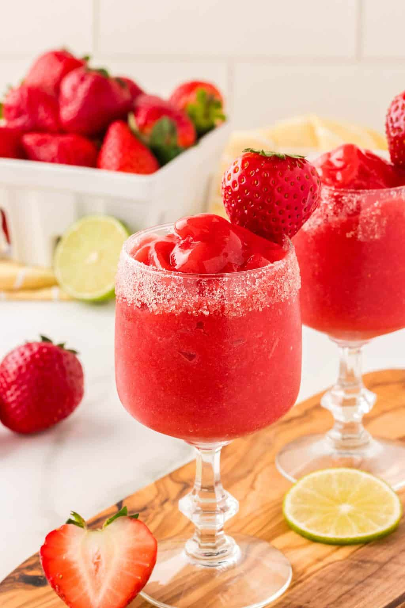

Virgin Strawberry Daiquiri

Description
This virgin strawberry daiquiri is probably the best drink I have ever had! It's easy to make with strawberries, sugar, lemon-lime soda, lemon juice, and ice. You can substitute red cream soda or your favorite flavor for the lemon-lime.
Yields: 1 serving
Prep time: 5 minutes
Total cooking time: 5 minutes
Ingredients
- 1 cup chilled lemon-lime soda
- 2 large strawberries, hulled
- ¼ cup white sugar
- 1 tablespoon lemon juice
- 4 cubes ice
Steps
- Combine lemon-lime soda, strawberries, sugar, and lemon juice in a blender. Add ice and blend until smooth.
- Pour into a fancy glass to serve.
- Garnish with fresh cut strawberry slices, topped with a sprig of mint.
Home